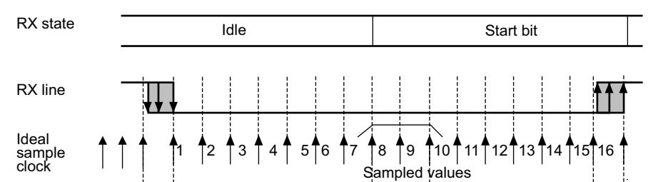
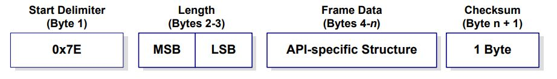
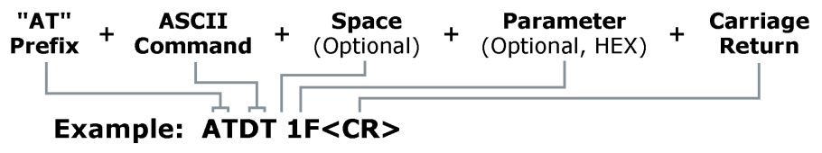
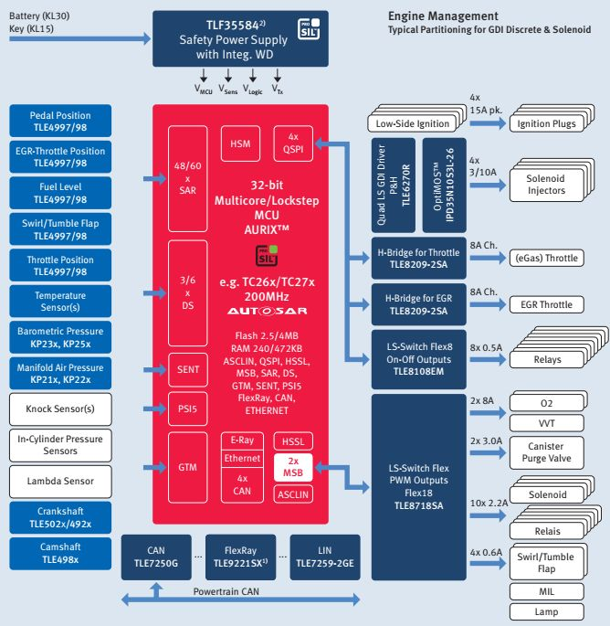
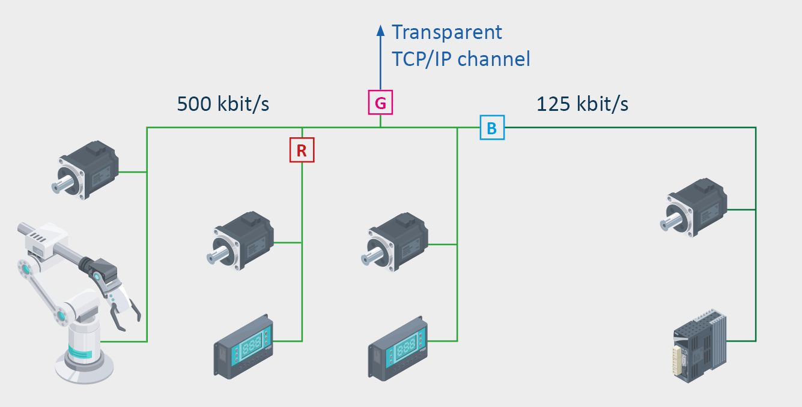

UpSKILL / ReSKILL
การพัฒนาเฟิร์มแวร์สำหรับระบบสื่อสาร CAN bus ในยานยนต์
June 24, 2569
4. Software Development Life Cycle
Artifacts: concept → requirement → architecture → detailed design → code → test report 
5. On-board/intra-board connectivity
การสื่อสารแบบอนุกรม (เรียงข้อมูลเป็นบิต) ได้รับผลกระทบของปัญหา cross-talk น้อยกว่า
- UART: full-duplex
- ขา Tx/Rx → async serial1
- data rate จำกัด (9600-115200 bps)
- SPI: full-duplex
- ขา SCLK/MISO/MOSI/CS → sync serial
- data rate สูง (10-20 Mbps)
- I2C: half-duplex
- ขา SDA/SCL → sync serial
- data rate ปานกลาง (100-400 kbps)

5. Async/Sync serial: timing
UART

SPI

5. Processor-to-chip protocol
UART protocol
- การสื่อสารแบบ point-to-point
- มักใช้กับ processor-to-processor
- มีขาเพิ่ม RTS / CTS สำหรับ handshake1
- โครงสร้าง command/data frame แบบ custom

- รูปแบบ AT command

SPI/I2C protocol
- เป็น comm bus → ต้องอ้างถึงอุปกรณ์
- SPI ใช้ขา CS
- I2C ใช้ device address
- สั่งการผ่านระบบ register ของตัว chip


5. ECUs in vehicle
Safety ECU

Battery ECU

5. In-vehicle network

เงื่อนไขของการสื่อสาร
- การสื่อสารระหว่างหน่วยประมวลผลจำนวนมาก
- ต้องส่งคำสั่ง/ข้อมูลภายในกรอบเวลาที่แน่นอน
Controller Area Network (CAN)
- ISO 11898 standard
- ระบบสัญญาณแบบ differential signalling
- CAN transceiver → CANH/CANL pins
- สายสัญญาณ Twisted 5V
- เครือข่ายแบบ async serial
- สื่อสารแบบ broadcast
- กลไก priority ผ่าน message ID
Local Interconnect Network (LIN)
- ISO 17987 standard
- ระบบสัญญาณแบบ single wire (12V/24V)
- LIN transceiver → LIN pin
- เครือข่ายแบบ async serial
- 1 commander / 16 responder
5. CAN bus topology
Components1
- Node: อุปกรณ์ที่รับ/ส่ง CAN frame เข้า CAN bus
- Repeater: อุปกรณ์ทำหน้าที่เชื่อมโยงระหว่าง CAN bus ที่เหมือนกัน
- Bridge: อุปกรณ์ทำหน้าที่เชื่อมโยงระหว่าง CAN bus ที่ต่างกัน
- Gateway: อุปกรณ์ทำหน้าที่เชื่อมโยงระหว่าง CAN bus กับโครงข่ายอื่น


5. CAN sniffer: USB2CANFD
บอร์ด USB2CANFD ใช้ส่ง/ตรวจจับ CAN message โดยส่ง command ผ่าน USB serial

- หน่วยประมวลผล STM32G0B1CBT6
- เฟิร์มแวร์ SLCAN
- ใช้ร่วมกับ python-can หรือ CANgaroo
| Commands | Purpose |
|---|---|
S8↵ |
ตั้ง data rate ที่ 1 Mbps |
Y1↵ |
ตั้ง FD data segment rate ที่ 1 Mbps |
O↵ |
เปิดช่องสื่อสาร CAN |
C↵ |
ปิดช่องสื่อสาร CAN |
| Commands | Purpose |
|---|---|
tIIILDD...↵ |
ส่ง data frame ด้วย ID, data |
rIIIL↵ |
ส่ง remote frame ด้วย ID, length |
dIIILDD...↵ |
ส่ง CAN-FD frame ด้วย ID, data |
bIIILDD...↵ |
ส่ง remote frame ด้วย ID, length |
5. CANgaroo
Open-source CAN bus analyzer: SLCAN, candleLight, Vector, Kvaser, PEAK PCAN, …
- DBC: รูปแบบไฟล์ที่อธิบายโครงสร้างของ CAN data frame → ถอดและแปลงข้อมูลจาก CAN data frame เป็นข้อมูลทางภายภาพ

5. CAN sniffer: oscilloscope
การตรวจสอบสถานะ 0/1 ของสัญญาณ CANH/CANL ด้วยออสซิลโลสโคป1 
5. CAN messages

| Fields | Length | Purpose |
|---|---|---|
| ID | 11/29 bit | การ arbitration ในการเข้าโครงข่ายของโหนดต่างๆ1 |
| data field | \(\le\) 8/64 byte | data frame (ข้อมูล), remote frame (ไม่มี/RTR=1) |
| CRC | 15/17/21 บิต | คำนวณจากบิตก่อนหน้า |
6. BxCAN vs FDCAN

6. STM32 FDCAN

STMC562 มี FDCAN x 1
- รองรับ CAN 2.0 และ CAN-FD
- Nominal: \(\le\) 1 Mbps
- Data: nominal ~ 8 Mbps
- 1 x TX FIFO สำหรับ 3 payload x 64 bytes
- 2 x RX FIFO สำหรับ 3 payload x 64 bytes
- Rx handler ผูกกับ 28 filter (11-bit ID) / 8 filter (29-bit ID)
- Tx/Rx handler ทำ 16-bit timestamp
6. STM32CubeMX2 → FDCAN
ขั้นตอนพื้นฐาน: FDCAN activation → mode + frame format + data rate → Tx/Rx pins 
6. Buffers in FDCAN

- 32-bit aligned memory / 212 words
- 11-bit ID: bit 2-15
Buffers ⇆ message RAM
- TX buffers:
- TX buffer: 32 x CAN msg
- TX FIFO: ส่ง CAN msg ตามลำดับ
- TX queue: ส่ง CAN msg ตาม ID priority
- TX event buffer: บันทึก msg ID ที่ส่ง + timestamp
- RX FIFO 0 / 1 buffer:
6. RX handler

6. FDCAN interrupts1
IRQ sources
- RX FIFO 0 / 1 groups:
new, full, lost - TX FIFO group:
fifo empty, event full - Error groups
NVIC IRQs
- FDCAN interrupt line 0
- FDCAN interrupt line 1
หมายเหตุ: สามารถจัด prior/subprior group แยกกัน